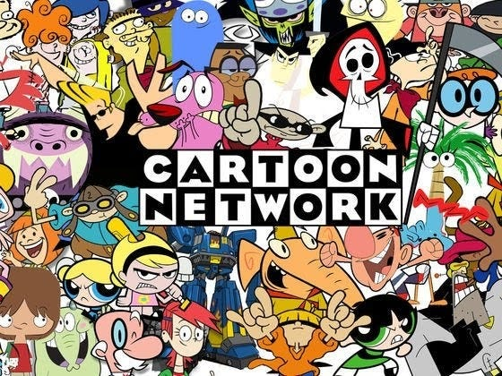
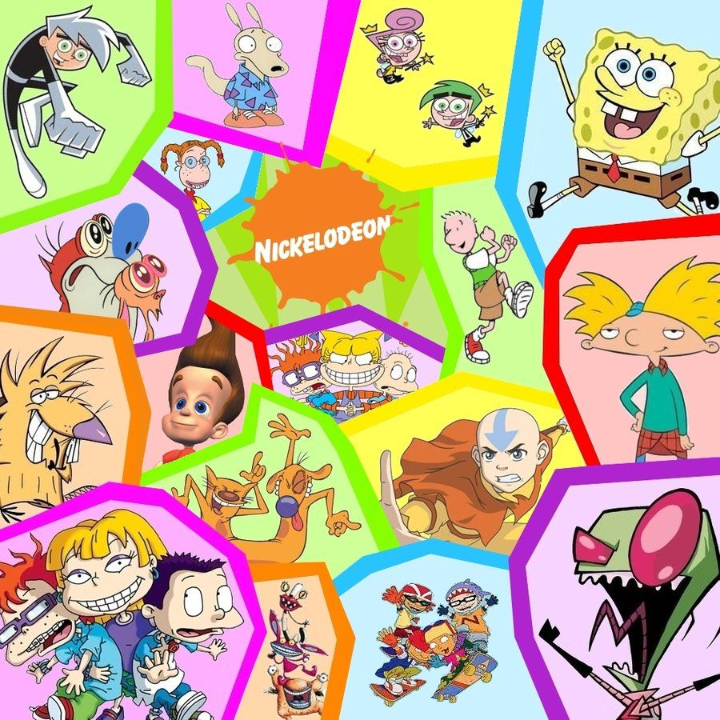
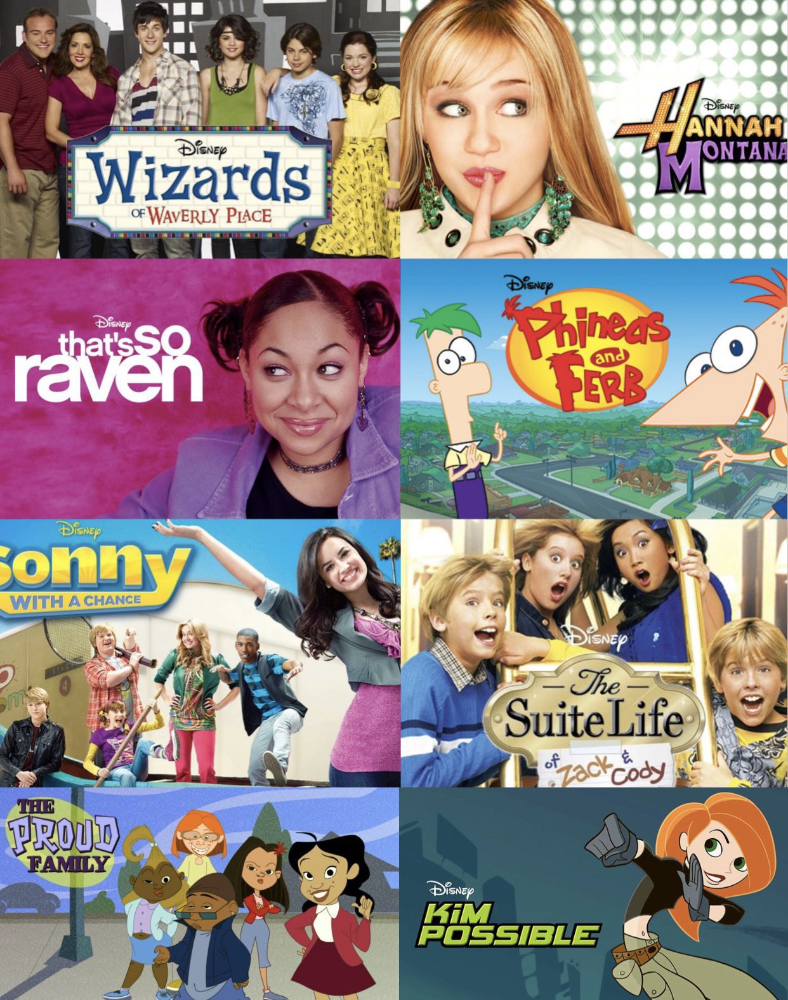
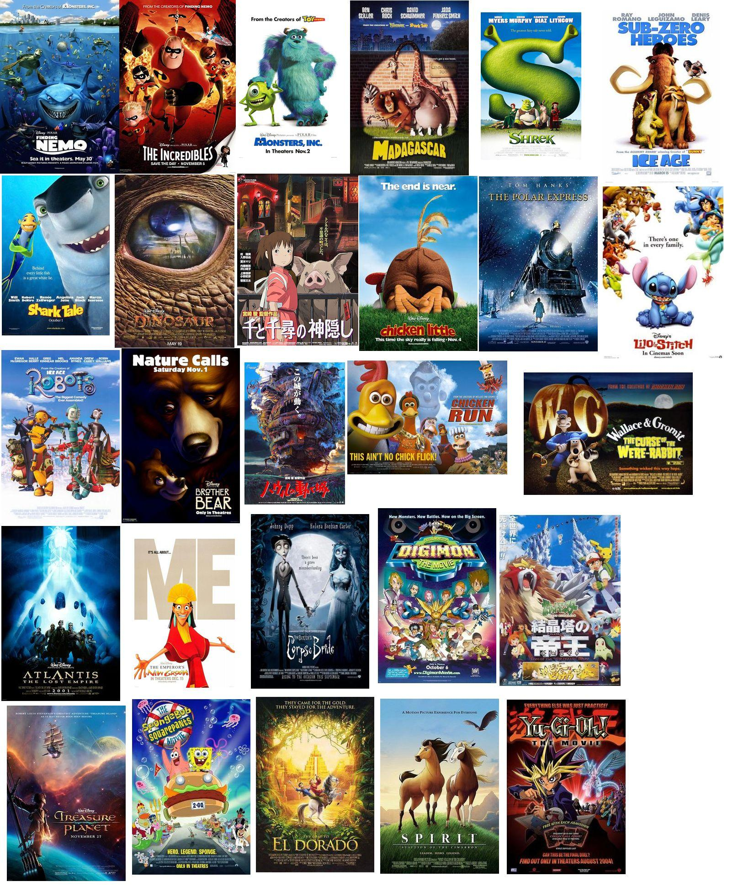

Tv & Tech in Y2K
Growing up in the 2000s, TV played a major role in our childhood. After school, on Saturday mornings, and in the evenings we can put aside our schoolwork to enjoy our favorite shows, be it a live-action adventure, a family sitcom, or an exciting cartoon. For those of us who grew up at the turn of the millennium, there was more choice than ever when it came to TV, as cable began offering more channels just for kids.
By the 2000s, Nickelodeon was joined by Cartoon Network and Disney Channel, and later came Disney XD, Nick Jr., Nicktoons, and more. Being able to look back at what we used to watch can be gratifying, fun and even make you a little teary. These shows are for varying age groups and were popular during or started between 2000-2010. See how many you have seen, maybe unlocking a memory or two along the journey.
Cartoon Network

Nickelodeon

Disney

2000s kids movies were the start of more realistic 3D animation. Many movie companies experimented with 3D animation and techniques. During a movie marathon or if you're at a friend's house, suggest adding some nostalgia boosters. In the 2000s, there was a rapidly growing interest in animation from a generation of kids dubbed “millennials.” Pre-teens and early teens, who had graduated from television cartoons and Walt Disney features of the 1990s like Beauty and the Beast, Aladdin, and The Lion King were getting excited by animated films like Toy Story, Shrek, and Finding Nemo that used innovative digital production. Young adults quickly followed suit, turning feature-length digital animation into an important segment of the movie industry. If you weren't a 2000s kid, try watching some of these movies to get a feel for what 2000s kids watched for entertainment.
